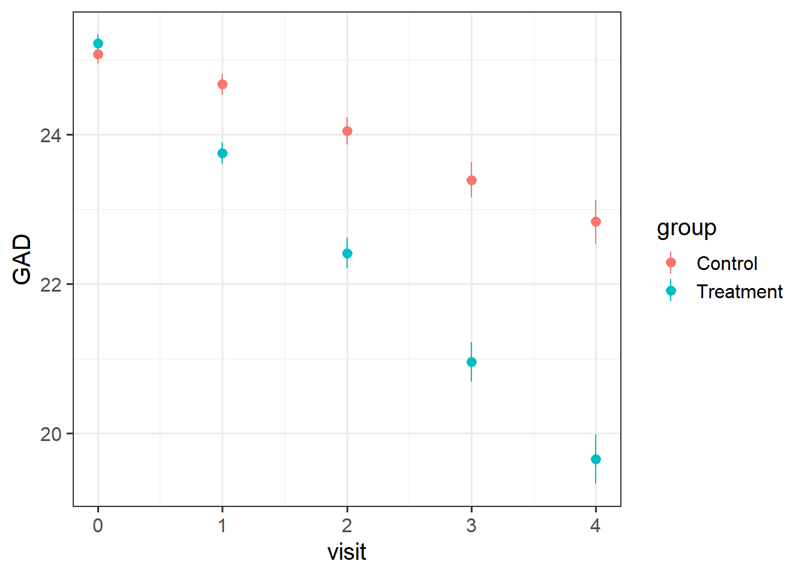
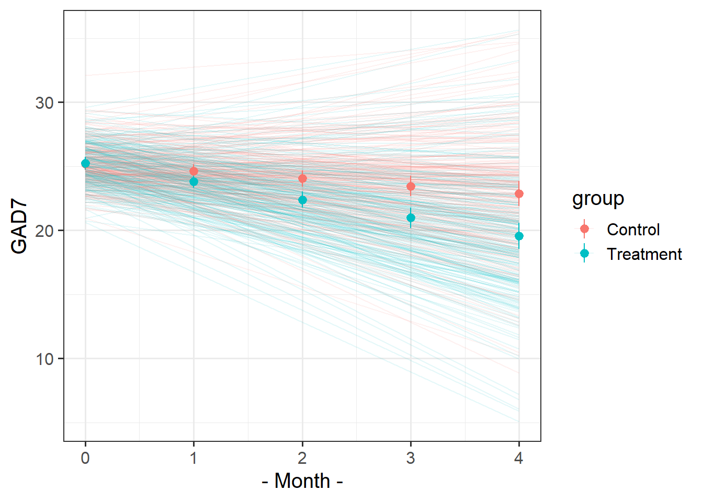
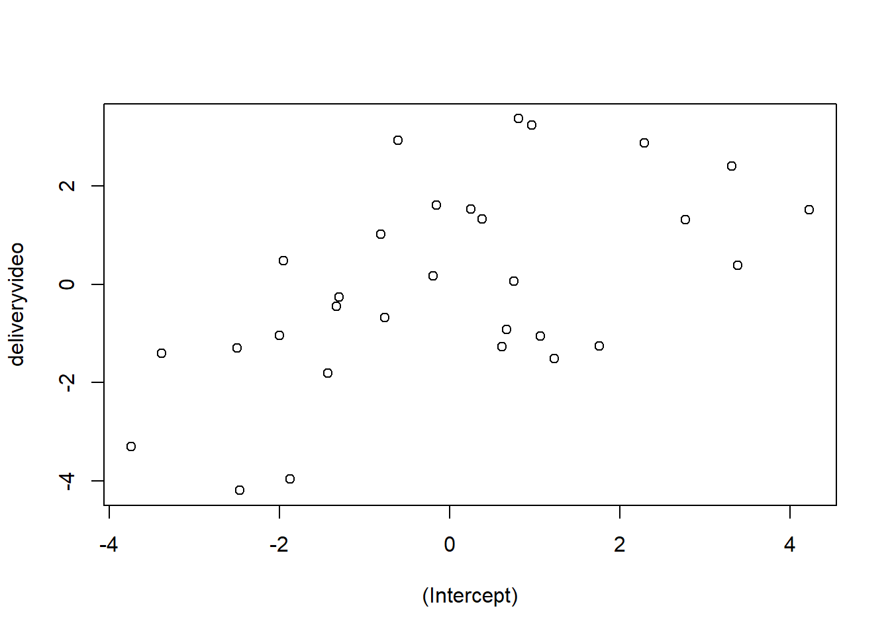

This is synthetic data from a randomised controlled trial, in which 30 therapists randomly assigned patients (each therapist saw between 2 and 28 patients) to a control or treatment group, and monitored their scores over time on a measure of generalised anxiety disorder (GAD7 - a 7 item questionnaire with 5 point likert scales).
The control group of patients received standard sessions offered by the therapists. For the treatment group, 10 mins of each sessions was replaced with a specific psychoeducational component, and patients were given relevant tasks to complete between each session. All patients had monthly therapy sessions. Generalised Anxiety Disorder was assessed at baseline and then every visit over 4 months of sessions (5 assessments in total).
A patient code in which the labels take the form <Therapist initials>_<group>_<patient number>.
visit_0
Score on the GAD7 at baseline
visit_1
GAD7 at 1 month assessment
visit_2
GAD7 at 2 month assessment
visit_3
GAD7 at 3 month assessment
visit_4
GAD7 at 4 month assessment
Question 1
Uh-oh… these data aren’t in the same shape as the other datasets we’ve been giving you..
Can you get it into a format that is ready for modelling?
Hints
It’s wide, and we want it long.
Once it’s long. “visit_0”, “visit_1”,.. needs to become the numbers 0, 1, …
One variable (patient) contains lots of information that we want to separate out. There’s a handy function in the tidyverse called separate(), check out the help docs!
Solution 1. Here’s the data. We have one row per patient, but we have multiple observations for each patient across the columns..
We can make it long by taking the all the columns from visit_0 to visit_4 (that is, from the second column 2 to the last column last_col()) and shoving their values into one variable called GAD, and keeping the name of the column they come from as another variable called visit:
This is step 1 of our data wrangling. In the next step, we’ll pipe the result of pivot_longer() into mutate().
In general, building up and running your data wrangling pipeline step by step, the way we’re illustrating here, is a good way to make sure each step of your code really is doing what you think it’s doing.
Solution 2. Now we know how to get our data long, we need to sort out our time variable (visit) and make it into numbers.
We can replace all occurrences of the string "visit_" in our data with nothingness "", and then convert what remains—the visit number—to numeric.
Solution 3. Finally, we need to sort out the patient variable. It contains 3 bits of information that we will want to have separated out. It has the therapist (their initials), then the group (treatment or control), and then the patient number. These are all separated by an underscore “_“.
The separate() function takes a column and separates it into several things (as many things as we give it), splitting them by some user defined separator such as an underscore:
# A tibble: 2,410 × 5
therapist group patient visit GAD
<chr> <chr> <chr> <dbl> <dbl>
1 VC Control 1 0 24
2 VC Control 1 1 24
3 VC Control 1 2 26
4 VC Control 1 3 29
5 VC Control 1 4 28
6 VC Control 2 0 24
7 VC Control 2 1 26
8 VC Control 2 2 28
9 VC Control 2 3 29
10 VC Control 2 4 30
# ℹ 2,400 more rows
Question 2
Visualise the data. Does it look like the treatment had an effect over time? Does it look like the treatment worked when used by every therapist?
Hints
remember, stat_summary() is very useful for aggregating data inside a plot.
Solution 4. Here’s the overall picture. The average score on the GAD7 at each visit gets more and more different between the two groups. The treatment looks effective..
ggplot(geduc_long, aes(x = visit, y = GAD, col = group)) +stat_summary(geom="pointrange")

Let’s split this up by therapist, so we can see the averages across each therapist’s set of patients.
There’s clear variability between therapists in how well the treatment worked. For instance, the therapists EU and OD don’t seem to have much difference between their groups of patients.
ggplot(geduc_long, aes(x = visit, y = GAD, col = group)) +stat_summary(geom="pointrange") +facet_wrap(~therapist)
Question 3
Fit a model to test if the psychoeducational treatment is associated with greater improvement in anxiety over time.
Step 1: Choose the appropriate fixed effects.
Step 2: Think about the grouping structure in the data.
Step 3: Choose the appropriate random effects.
Note that the patient variable does not uniquely specify the individual patients. That is, patient “1” from therapist “AO” is a different person from patient “1” from therapist “BJ”.
Solution 5. We want to know if how anxiety (GAD) changes over time (visit) is different between treatment and control (group).
Hopefully this should hopefully come as no surprise1 - it’s an interaction!
lmer(GAD ~ visit * group + ... ...data = geduc_long)
Solution 6. We have multiple observations for each of the 482 patients, and those patients are nested within 30 therapists.
Note that in our data, the patient variable does not uniquely specify the individual patients. i.e. patient “1” from therapist “AO” is a different person from patient “1” from therapist “BJ”. To correctly group the observations into different patients (and not ‘patient numbers’), we need to have therapist:patient.
So we capture therapist-level differences in ( ... | therapist) and the patients-within-therapist-level differences in ( ... | therapist:patient):
Solution 7. Note that each patient can change differently in their anxiety levels over time - i.e. the slope of visit could vary by participant.
Likewise, some therapists could have patients who change differently from patients from another therapist, so visit|therapist can be included.
Each patient is in one of the two groups - they’re either treatment or control. So we can’t say that “differences in anxiety due to treatment varies between patients”, because for any one patient the “difference in anxiety due to treatment” is not defined in our study design.
However, therapists see multiple different patients, some of which are in the treatment group, and some of which are in the control group. So the treatment effect could be different for different therapists!
Solution 8. The question asked whether the psychoeducational treatment (in the variable group) is associated with greater improvement in anxiety (GAD) over time (visit).
Let’s take a look at the model summary to find out.
summary(mod1)
Linear mixed model fit by REML ['lmerMod']
Formula: GAD ~ visit * group + (1 + visit * group | therapist) + (1 +
visit | therapist:patient)
Data: geduc_long
REML criterion at convergence: 8696
Scaled residuals:
Min 1Q Median 3Q Max
-2.7051 -0.5341 0.0147 0.5412 2.9954
Random effects:
Groups Name Variance Std.Dev. Corr
therapist:patient (Intercept) 1.448 1.203
visit 1.014 1.007 0.07
therapist (Intercept) 1.602 1.266
visit 0.211 0.459 -0.09
groupTreatment 0.082 0.286 -0.13 0.02
visit:groupTreatment 0.154 0.392 -0.14 -0.20 -0.49
Residual 0.706 0.840
Number of obs: 2410, groups: therapist:patient, 482; therapist, 30
Fixed effects:
Estimate Std. Error t value
(Intercept) 25.1910 0.2528 99.63
visit -0.5780 0.1120 -5.16
groupTreatment 0.0313 0.1377 0.23
visit:groupTreatment -0.8375 0.1233 -6.79
Correlation of Fixed Effects:
(Intr) visit grpTrt
visit -0.073
groupTrtmnt -0.278 0.029
vst:grpTrtm -0.067 -0.442 -0.160
The question focuses on the fixed effects, so let’s look at those coefficients and their t-values.
visit: We see a negative association between visit and GAD: the more therapy visits you have - when you are in the control condition - the less your anxiety. The t-value here is more extreme than 2 (which is, as a rule of thumb, approximately the t-value that represents the boundary of the 95% CI). So we likely have a significant negative association between time and anxiety. If this association is significant, that means we can reject the null hypothesis that there’s no change in anxiety over time.
groupTreatment: We see a very small positive association between group and GAD, but the error is much bigger than the estimate itself, and consequently, the t-value is also pretty close to 0. I doubt we can reject the null hypothesis that, on average, there’s no difference between the treatment and control groups at baseline (when visit = 0).
visit:groupTreatment: We see a negative coefficient for the interaction between visit and groupTreatment, accompanied by a fairly extreme t-value. We likely have a significant negative interaction. This means that we can reject the null hypothesis that there’s no difference between groups as time goes on. And the negative coefficient means that, as visits increase, the GAD of the treatment group decreases more than the GAD of the control group does. (Note: Interactions are REALLY hard to interpret just based on model coefficients. The best way to interpret them is to look at plots of the data.)
To see whether our guesses about significance based on the t-values were on the right track, we can re-fit the model using lmerTest.
Linear mixed model fit by REML. t-tests use Satterthwaite's method [
lmerModLmerTest]
Formula: GAD ~ visit * group + (1 + visit * group | therapist) + (1 +
visit | therapist:patient)
Data: geduc_long
REML criterion at convergence: 8696
Scaled residuals:
Min 1Q Median 3Q Max
-2.7051 -0.5341 0.0147 0.5412 2.9954
Random effects:
Groups Name Variance Std.Dev. Corr
therapist:patient (Intercept) 1.448 1.203
visit 1.014 1.007 0.07
therapist (Intercept) 1.602 1.266
visit 0.211 0.459 -0.09
groupTreatment 0.082 0.286 -0.13 0.02
visit:groupTreatment 0.154 0.392 -0.14 -0.20 -0.49
Residual 0.706 0.840
Number of obs: 2410, groups: therapist:patient, 482; therapist, 30
Fixed effects:
Estimate Std. Error df t value Pr(>|t|)
(Intercept) 25.1910 0.2528 28.7236 99.63 < 2e-16 ***
visit -0.5780 0.1120 25.7026 -5.16 2.3e-05 ***
groupTreatment 0.0313 0.1377 21.4424 0.23 0.82
visit:groupTreatment -0.8375 0.1233 18.8876 -6.79 1.8e-06 ***
---
Signif. codes: 0 '***' 0.001 '**' 0.01 '*' 0.05 '.' 0.1 ' ' 1
Correlation of Fixed Effects:
(Intr) visit grpTrt
visit -0.073
groupTrtmnt -0.278 0.029
vst:grpTrtm -0.067 -0.442 -0.160
Yes, the effects deemed “significant” based on Satterthwaite’s method are the ones we expected.
So yes, it looks like the treatment group does improve more over time, compared to the control group, taking into account all the variability introduced by individual patients and therapists.
Question 4
For each of the models below, what is wrong with the random effect structure?
modelA <-lmer(GAD ~ visit*group + (1+visit*group|therapist)+ (1+visit|patient), geduc_long)
modelA <-lmer(GAD ~ visit*group + (1+visit*group|therapist)+ (1+visit|patient), geduc_long)
The patient variable doesn’t capture the different patients within therapists, so this actually fits crossed random effects and treats all data where patient==1 as from the same group (even if this includes several different patients’ worth of data from different therapists!)
Using the / here means we have the same random slopes fitted for therapists and for patients-within-therapists.
Concretely, (1+visit*group|therapist/patient) is shorthand for (1 + visit*group | therapist) (which is fine) + (1 + visit*group | patient:therapist) (which is not fine, because we don’t have data for every participant for both groups.
In other words, the effect of group can’t vary by patient, so this doesn’t work, hence why we need to split them up into (...|therapist)+(...|therapist:patient).
Question 5
Let’s suppose that I don’t want the psychoeducation treatment, I just want the standard therapy sessions that the ‘Control’ group received. Which therapist should I go to?
Hints
You don’t need to fit a new model here, you can use the one you fitted above.
The faint lines represent the model estimated lines for each patient. The points and ranges represent our fixed effect estimates and their uncertainty.
Make sure you’re plotting model estimates, not the raw data.

Hints
you can get the patient-specific lines using augment() from the broom.mixed package, and the fixed effects estimates using effect() from the effects package.
remember that the “patient” column doesn’t group observations into unique patients.
remember you can pull multiple datasets into ggplot:
ggplot(data = dataset1, aes(x=x,y=y)) +geom_point() +# points from dataset1geom_line(data = dataset2) # lines from dataset2
We want to get the fitted values for each patient. We can get fitted values using augment(). But the patient variable doesn’t capture the unique patients, it just captures their numbers (which aren’t unique to each therapist).
So we can create a new column called upatient which pastes together the therapists initials and the patient numbers
augment(mod1) |>mutate(upatient =paste0(therapist,patient),.after = patient # place the column next to the patient col )
library(effects)library(broom.mixed)effplot <-effect("visit*group",mod1) |>as.data.frame()augment(mod1) |>mutate(upatient =paste0(therapist,patient),.after = patient # place the column next to the patient col ) |>ggplot(aes(x=visit,y=.fitted,col=group))+stat_summary(geom="line", aes(group=upatient,col=group), alpha=.1)+geom_pointrange(data=effplot, aes(y=fit,ymin=lower,ymax=upper,col=group))+labs(x="- Month -",y="GAD7")
Jokes
Data: lmm_laughs.csv
These data are simulated to imitate an experiment that investigates the effect of visual non-verbal communication (i.e. gestures, facial expressions) on joke appreciation. 90 participants took part in the experiment, in which they each rated how funny they found a set of 30 jokes. For each participant, the order of these 30 jokes was randomised for each run of the experiment. For each participant, the set of jokes was randomly split into two halves, with the first half being presented in audio-only, and the second half being presented in audio and video. This meant that each participant saw 15 jokes with video and 15 without, and each joke would be presented with video roughly half of the time.
The researchers want to investigate whether the delivery (audio/audiovideo) of jokes is associated with differences in humour-ratings.
Solution 13. We want to estimate the effect of delivery on humour rating of jokes: rating ~ delivery
We have 30 observations for each participant. Participants are just another sampling unit here. rating ~ delivery + (1 | ppt)
We have 90 observations for each joke. We’re not interested in specific jokes here, so we can think of these as a random set of experimental items that we might choose differently next time we conduct an experiment to assess delivery~rating: rating ~ delivery + (1 | ppt) + (1 | joke_id)
Participants each see 15 jokes without video, and 15 with. The delivery variable is “within” participant. Some participants might respond a lot to having video whereas some might not rate jokes any differently. The effect of delivery on rating might be vary by participant: rating ~ delivery + (1 + delivery | ppt) + (1 | joke_id)
Each joke is presented both with and without the video. Some jokes might really benefit from gestures and facial expressions, whereas some might not. The effect of delivery on rating might be vary by joke: rating ~ delivery + (1 + delivery | ppt) + (1 + delivery | joke_id)
Question 8
Read in and clean the data (if necessary).
Create some plots showing:
the average rating for audio vs audio+video for each joke
the average rating for audio vs audio+video for each participant
Hints
you could use facet_wrap, or even stat_summary!
you might want to use joke_id, rather than joke_label (the labels are very long!)
Solution 14. Here is one using facet_wrap:
ggplot(laughs, aes(x = delivery, y = rating)) +geom_boxplot()+facet_wrap(~joke_id)
[1] "How many psychiatrists does it take to change a lightbulb? Just one, but the lightbulb really has to want to change."
(not sure I agree)
To find out which joke benefits most from video, we should look at the by-joke adjustments to the slope over delivery.
We can see the biggest slope adjustment in the plot above, which shows us that Joke 28 has the most benefit of video. We can also quickly check this with something like:
[1] "An Alsatian went to a telegram office, took out a blank form and wrote:\n\"Woof. Woof. Woof. Woof. Woof. Woof. Woof. Woof. Woof.\"\nThe clerk examined the paper and politely told the dog: \"There are only nine\nwords here. You could send another \x91Woof' for the same price.\"\n\"But,\" the dog replied, \"that would make no sense at all.\""
The joke itself is a bit weird… but I can imagine that the video really helped!
Question 11
Do jokes that are rated funnier when presented in audio-only tend to also benefit more from the addition of video?
Hints
Think careful about this question. The random effects show us that jokes vary in their intercepts (ratings in audio-only) and in their effects of delivery (the random slopes). We want to know if these are related… one might even say … co-related …
Solution 17.
VarCorr(mod)
Groups Name Std.Dev. Corr
ppt (Intercept) 3.51
deliveryvideo 1.78 0.00
joke_id (Intercept) 2.15
deliveryvideo 2.24 0.39
Residual 5.83
It’s the correlation of joke_id’s (Intercept) and deliveryvideo adjustments here that addresses the question. The correlation is 0.39, so this tells us that jokes rated higher when presented as audio-only tend to have a bigger effect of the video.
We can see this in a plot if we like. Here every dot is a joke, and the x-axis shows whether it is above or below the average rating for audio-only (the intercept). The average rating for audio-only is represented as 0 on the x axis, so if the rating is above-average, the value is positive; if the rating is below-average, the value is negative.
The y-axis shows whether it is above or below the average effect of video. The average effect of video is represented as 0 on the y axis, so if the effect is above-average, the value is positive; if the effect is below-average, the value is negative.
plot(ranef(mod)$joke_id)

Question 12
Create a plot of the estimated effect of video on humour ratings. Try to plot not only the fixed effects, but the raw data too.
An experiment was run to conceptually replicate “test-enhanced learning” (Roediger & Karpicke, 2006): two groups of 25 participants were presented with material to learn. One group studied the material twice (StudyStudy), the other group studied the material once then did a test (StudyTest). Recall was tested immediately (one minute) after the learning session and one week later. The recall tests were composed of 175 items identified by a keyword (Test_word).
The critical (replication) prediction is that the StudyStudy group perform better on the immediate test, but the StudyTest group will retain the material better and thus perform better on the 1-week follow-up test.
Test performance is measured as the speed taken to correctly recall a given word.
The following code loads the data into your R environment by creating a variable called tel:
Table 3: Data Dictionary: testenhancedlearning.Rdata
variable
description
Subject_ID
Unique Participant Identifier
Group
Group denoting whether the participant studied the material twice (StudyStudy), or studied it once then did a test (StudyTest)
Delay
Time of recall test ('min' = Immediate, 'week' = One week later)
Test_word
Word being recalled (175 different test words)
Correct
Whether or not the word was correctly recalled
Rtime
Time to recall word (milliseconds)
Question 13
Here is the beginning of our modelling.
Code
# load in the dataload(url("https://uoepsy.github.io/data/testenhancedlearning.RData"))# performance is measured by time taken to *correctly*# recall a word.# so we're going to have to discard all the incorrects:tel <- tel |>filter(Correct ==1)# preliminary plot# makes it look like studytest are better at immediate (contrary to prediction)# both groups get slower from immediate > week, # but studystudy slows more than studytestggplot(tel, aes(x = Delay, y = Rtime, col = Group)) +stat_summary(geom="pointrange")mmod <-lmer(Rtime ~ Delay*Group + (1+ Delay | Subject_ID) + (1+ Delay * Group | Test_word),data=tel)
Solution 19.
This is what I did. You might do something else!
First I removed the interaction from the random effects
This model is a singular fit, suggesting it needs further simplification. The variance covariance matrix of the random effects isn’t giving us many pointers..
However, sometimes it is simplest just to trial & error the removal of different possible terms. Here we are removing Delay|Test_word and removing Delay|Subject_ID:
The second model is a singular fit, but the first one is not. Just for safety, let’s check:
isSingular(mod2a)
[1] FALSE
All looks good there.
Sometimes it can be useful to check how estimates of fixed effects and their standard errors differ across possible candidate models with different random effect structures. More often than not, this simply provides us with reassurance that the removal of random effects hasn’t actually had too much of an impact on anything we’re going to conduct inferences on. If they differ a lot, then we have a lot more to discuss!
Here are the fixed effects from each model:
term
mod1
mod2a
mod2b
(Intercept)
740.55 (7.17)
740.57 (7.21)
740.69 (7.23)
Delayweek
27.65 (6.97)
27.64 (6.87)
27.23 (6.64)
GroupStudyTest
-31.82 (10.26)
-31.75 (10.23)
-31.73 (10.35)
Delayweek:GroupStudyTest
-17.2 (9.69)
-17.26 (9.7)
-17.18 (9.19)
In all these models, the fixed effects estimates are all pretty similar, suggesting that they’ve all found similar estimates of these parameters which have been largely invariant to our refinement of the random effects. This makes me feel better - there’s less worry that our final conclusions are going to be influenced by specifics of incl/exclusion of one of these random effect terms.
I would definitely settle on mod2a because that is the one that converges, but we can add a footnote if we wanted, to mention that mod2b finds the same pattern of results.
Footnotes
if it does, head back to where we learned about interactions in the single level regressions lm(). It’s just the same here.↩︎